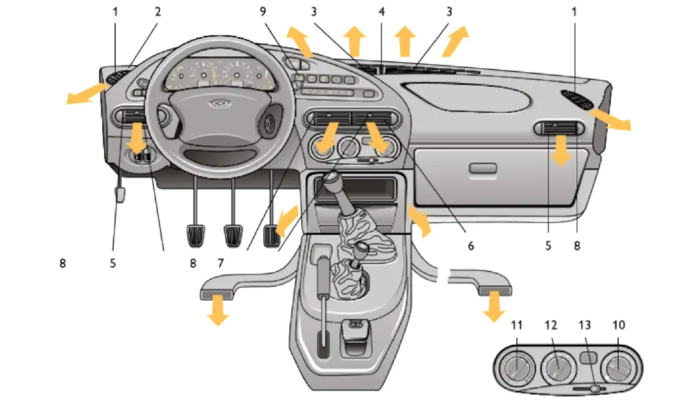

Управление вентиляцией салона
Вентиляция и отопление салона регулируются в зависимости от температуры наружного воздуха.

Вентиляция салона. В крайнем левом положении рычага 13 наружный воздух может поступать в салон автомобиля через верхние щели панели приборов и сопла обдува стёкол передних дверей, через боковые и центральные сопла, или через нижние сопла в зону ног водителя и пассажиров. Регуляторами регулируется интенсивность подачи воздуха через боковые и центральные сопла путём изменения положения заслонок вплоть до полного их закрытия.
Для увеличения подачи воздуха в салон автомобиля включите ручкой один из четырёх режимов электровентилятора отопителя.
Режим рециркуляции. При включении режима рециркуляции перекрывается подача наружного воздуха. Этот режим может быть полезен в летнее время, например, при проезде тоннеля или при движении в пробке для исключения попадания в салон воздуха, насыщенного отработавшими газами.
На автомобиле установлен пылефильтр, который очищает поступающий в салон воздух от пыли, копоти, пыльцы растений и т.д.
Предохранение стёкол от запотевания и обмерзания. Для предохранения ветрового стекла и стёкол дверей от запотевания в летнее время достаточно направить на них холодный воздух. Для размораживания стёкол необходимо направить на них подогретый воздух. Для предохранения заднего стекла от запотевания и обмерзания включите электрообогрев стекла выключателем.
Отопление салона. Температура воздуха, подаваемого в салон, регулируется положением ручки, а интенсивность его подачи — положением ручки электровентилятора отопителя.
После размораживания ветрового стекла и стёкол передних дверей выберите желаемое направление подачи воздуха в салон: через боковые и центральные сопла при открытых заслонках сопел, или в нижнюю часть салона.
С целью ускорения прогрева салона на стоящем автомобиле включайте режим рециркуляции.
При движении режим рециркуляции необходимо отключать, так как это приводит к запотеванию стёкол.